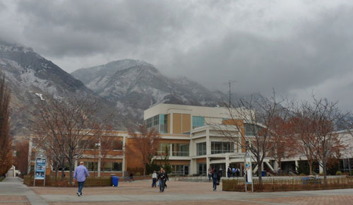

The 25 Most Amazing Campus Student Unions
In addition to being the hub of student affairs on campus, student unions offer a variety of programs, activities, services, and facilities that attract both new and current students alike. Universities and colleges are currently in the midst of a building boom nationwide, as they are investing tens and hundreds of millions of dollars to revitalize their student unions. The following are the top 25 most amazing college campus student unions that are going above and beyond to accommodate and pamper students.
25. Union South, University of Wisconsin

Situated adjacent to the Memorial Union, the Union South is the newest addition to the University of Wisconsin campus. The opulent student union first opened on April 15, 2011 after a $94.8 million dollar construction project. Considered the new heart and soul of the campus, the building was influenced by famous architect Frank Lloyd Wright with its organic, prairie-style architectural design. It is home to a 330-seat cinema called the Marquee, which presents hundreds of film screenings each year. Union South also features a climbing wall, eight-lane bowling alley, several pool tables, scores of high-definition televisions, and a wine and coffee bar.
24. Student Union, University of North Florida

Rather recently opened in 2009, the Student Union became the first campus building dedicated to student activities in the history of the University of North Florida. The 150,048 square feet structure cost approximately $50.4 million dollars to construct, but it was apparently well worth every penny. On April 18, 2012, the Florida Chapter of the American Institute of Architects ranked the Student Union fourth on its list for Florida Architecture: 100 Years, 100 Places. The UNF Student Union is comprised of two buildings that are connected by a walkway known on the campus as Osprey Plaza. It contains a convenience store, several restaurants, a game room, the UNF bookstore, an LGBT Resource Center, and an auditorium. It is also the location for the university’s student newspaper The Spinnaker, as well as Osprey Television and Osprey Radio.
23. George Sherman Union, Boston University

As the community student center for Boston University, the George Sherman Union provides social, recreational, and cultural activities to enrich student life. The Brutalist-style building houses administrative offices, two banks, nine restaurants, and several auditoriums. After recent renovations in the summer of 2010, GSU was one of the many buildings that were transformed to reduce the university’s carbon footprint. Moreover, the Green Restaurant Association recently designated the George Sherman Union Court as a Certified Green Restaurant, which means it is the most environmentally friendly dining spot in the state and the only such food court in the nation.
22. Houston Harte University Center, Angelo State University

Encompassing more than 110,000 square feet of the Angelo State University campus, the Houston Harte University Center is a student union with all of the cutting-edge multimedia, technology, sound, and lighting features. The university prides itself on the display of flags throughout the building, which represent every country that enrolled international students have traveled from. The centers houses a large recreation center for students with several billiards tables, ping pong tables, air hockey tables, large flat-screen plasma televisions, and gaming consoles. The University Center Snack Bar also features all of the college life staples, such as breakfast burritos, pizza, sandwiches, salads, and Starbucks.
21. Willard Straight Hall, Cornell University

As one of the first structures in the United States dedicated solely to student life, Willard Straight Hall on the Cornell University campus was built in 1925. The stunning Gothic structure was modeled after the famous Hart House on the campus of the University of Toronto. It was named in honor of Willard Straight after his widow, Dorothy Straight, funded the building as his memoriam. Today, Willard Straight Hall provides support for most of the university’s student activities. At 103,000 square feet spread over six floors, the student union is home to art galleries, international lounges, television rooms, student lounges, meeting room lofts, dining facilities, and the popular Cornell Cinema. The Resource Center also offers student services with the browsing library, lobby information desk, mail room, and athletic ticket sales box office.
20. Memorial Union, Oregon State University

The Memorial Union student center of Oregon State University stands out among the remainder of the campus. The union is designed in a striking Neoclassical design, with mainly red bricks, white granite accents, and an eye-catching dome in the middle. Actually, the building has been recognized as one of the finest examples of neoclassical architecture in the entire state. First opened to the public on June 1, 1928, it originally served as a memorial for those who have given their lives in defense of the country. Now, the Memorial Union is a center for student life on the Oregon State campus, where students can visit the university bookstore, cafeteria, study lounges, and ballroom. It is also the site of the Center for Fraternity and Sorority Life for the OSU Greek Community of 24 fraternities and 18 sororities.
19. Ernest L. Wilkinson Student Center, Brigham Young University

As the main center for the Brigham Young University in Provo, Utah, the Ernest L Wilkinson Center is known around campus for being the hotspot for various student needs. The student union hosts the Dean of Students Office, the Center for Service and Learning, Career and Counseling Center, and Student Honor Association offices. In the Cougareat Food Court, students can pick from multiple food stations, including Taco Bell, Subway, Chick-Fil-A, and Freschetta. Students can even enjoy some good, clean fun at the Bowling and Games Center. The Wilkinson Student Center is also the residence for the well-known Studio 1030 Paul Mitchell Signature Salon, where students can address all of their hair, skin care, and nail needs for special discounted prices.
18. Alfred Lerner Hall, Columbia University

Alfred Lerner Hall is nestled within the historic Morningside Heights campus of Columbia University in New York City. Designed by famous architect Bernard Tschumi, Lerner Hall features redbrick cladding that hold the street wall of all the campus buildings along Broadway, as well as a contrasting vast glass wall. Behind this wall, there are escalating ramps that are meant to act as a gathering place for students. The student union is home to social events throughout the entire academic year. It serves as the location for one of the oldest traditions at Columbia, the Varsity Show, which is a long-standing satirical musical about university life and a fundraiser for the school’s athletic teams. Alfred Lerner Hall also consists of a cinema named in honor of broadcasting alumnus Roone Arledge, student lounges, student organization offices, and several eateries.
17. Arkansas Union, University of Arkansas

In the center of the University of Arkansas sits the Arkansas Union, providing a community for students and visitors to connect with a multitude of convenient services. It is home for more than 25 different departments, restaurants, and retail stores, including the popular Razorback Shop. Located on the third floor, the Union Market Food Court provides a place to sit and meet with friends to share a bite to eat, while enjoying some of the best views of the campus. The Arkansas Union is proud to host the Center for Community Engagement (CCE) as well, which helps students and faculty network with non-profit organizations in the campus area and beyond for community service. Additionally, it hosts a satellite fitness facility on the lower floor space with a 1,500 square foot exercise room, co-ed lockers, and separate shower facilities.
16. Purdue Memorial Union, Purdue University

Standing on the Purdue University campus in West Lafayette, Indiana, the Purdue Memorial Union first opened in 1924 as a memorial to students who had fought and lost their lives in World War I. Today, the union includes many restaurants, student organization offices, and lounges. Students can stop for some pizza at the Villa Fresh Italian Kitchen, a deli sandwich at the Oasis Café, or ice cream at Pappy’s Sweet Shop. PMU is also the location for essential student service offices, including the Cashier Office, the Boiler Copy Maker, the Purdue Student Union Board, and the UPS Store. The Union Rack & Roll bowling alley is located in the basement of PMU, where students can have fun with glow in the dark bowling with laser lights and loud music. Also inside the Purdue Memorial Union, the Union Club Hotel is a full-service hotel that provides a comfortable place to stay for visitors of the campus.
15. O’Hara Student Center, University of Pittsburgh

Formerly known as the Concordia Club, the University of Pittsburgh purchased the historic building on July 16, 2009 for $2.1 million. After running out of room at the campus’ original William Pitt Union, the university underwent a $5.8 million project to renovate and upgrade the Concordia Club into its present state as the O’Hara Student Center. Now, the first floor contains a large study space, meeting rooms, and a dining room with beautiful preserved oak panels. The second floor is home to a 450-person capacity ballroom with a small stage and three eye-catching chandeliers. Not only has the newly improved O’Hara Student Center attracted students, it has also caught the attention of film directors. The building was used as a shooting location for the horror movie Sorority Row.
14. K-State Student Union, Kansas State University

After first opening its doors in 1956, the K-State Student Union has offered various amenities to services in what is referred to as the campus’ living room. The 240,000 square foot building cost just $5.4 million, even though it would cost an estimated $42 million today to build a student union of this great size. In April of 1986, the K-State Student Union was distinguished as one of the top five student unions in America at the time by the New York Times. Presently, the union houses two separate theater venues, a massive food court, a bookstore, convenience stores, and outside bank ATMs. The attached Recreation Center also enables students to take a break from studying to use the bowling alley, pool table, and golf simulator.
13. Bronco Student Center, California State Polytechnic University

Situated on the campus of Cal Poly Pomona, the Bronco Student Center is a health nut’s paradise. Although the university understands the need for food on the go, meals at the Bronco Student Center are not served in the typical fast food fashion. Center Court, on the first floor of the union, offers seven different nutritional dining options. Whether fresh-made sushi rolls at Kikka Sushi or a fresh fruit smoothie from Peets Coffee, students have the widest selection of healthy meal choices to provide energy for their studies. In addition, the Bronco Fitness Center in the union offers state of the art gym equipment to help students stay in shape, without a membership commitment. The student hangout spot is also great for meetings, conferences, shopping, and numerous recreation activities.
12. McCormick Tribune Campus Center, Illinois Institute of Technology

During an international architectural design competition hosted by the Illinois Institute of Technology in 1997, the winner Rem Koolhaas designed his first building in the United States – the McCormick Tribune Campus Center. After outstanding designs by the Pritzer Prize-winning Dutch architect, the single-story 110,000 square foot student union was opened on September 30, 2003. One of the most amazing unique quirks about this union is its location directly underneath the Chicago Transit Green Line commuter rail tracks. An attention-grabbing concrete and stainless steel tube encloses the rail tracks, allowing the trains to pass right over the union. Since the tube dampens the noise of the train, students can still peacefully enjoy the decked out recreational facilities, retail shops, student organizations, and food courts.
11. Houston Hall, University of Pennsylvania

In 1896, Houston Hall became the first student union building in America after being funded on a generous donation of $100,000 from the Trustee Henry Howard Houston. Now the oldest student union in the United States, Houston Hall contains a massive cafeteria, dining rooms, study rooms, and countless meetings rooms spread out over 85,324 square feet. It is also home to an auditorium on the second floor that is utilized as a flexible multipurpose room, and dedicated to the class of 1949. Since a multi-million dollar renovation in 2000, the union has been outfitted with all of the latest technology and multimedia for top-notch modern conveniences. Houston Hall is a unique venue in the city of Philadelphia that proves it is possible to teach old buildings new tricks.
10. Adele H. Stamp Student Union, University of Maryland

Named after Adele H. Stamp who served as the university’s dean of women for more than four decades, the Stamp Student Union is the center for campus life at the University of Maryland. Since Stamp houses almost all of the student organizations and activities offered, the union receives more than 19,000 visitors each day. With its Union Shop, University Book Center, and Terrapin Technology Store, and large food court, Stamp bears a resemblance to an upscale shopping mall. On the basement level, TerpZone is an entertainment center that includes a bowling alley, arcade, and projection screen for viewing movies or sporting events. The Hoff Theater also has a 550-seat capacity for watching movies in Dolby Digital surround sound. Immediately outside its doors, the Nyumburu Amphitheater often features outdoor performances by students and local organizations of all kinds.
9. Tivoli Student Union, University of Colorado Denver

Housed in the historic building that was originally the Tivoli Brewing Company, the Tivoli Union is located in the Auraria neighborhood of Denver. Although it is now used for student organization offices and meeting rooms, the building still retains its historic charms, including the copper brewing kettles and a large barrel lift. In fact, the Tivoli is listed on the National Register of Historic Places as a Denver landmark. The one-of-a-kind student union serves the students and faculty members of not one, but three different university campuses. It serves as the hub of student activity for highest-enrolled campuses in the region of the University of Colorado Denver, the Metropolitan State University of Denver, and the Community College of Denver. The Tivoli Student Union is the residence for the Auraria Bookstore, Early Learning Center, Higher Ed Center, and a large variety of food service options.
8. Price Center, University of California San Diego

Just south of the renowned Geisel Library, the Price Center offers students an assortment of services, spaces, and places to meet all their needs on the University of California San Diego campus. The student union was first opened on April 21, 1989 after being built as a replacement for a much smaller Student Center that is still open. In 2008, the university underwent a $64 million dollar expansion project that nearly doubled its original size. In 2009, the newly added Price Center East received an architectural award from the American Institute of Architects for its improvements. Today, the Price Center serves more than 30,000 students and visitors daily to its markets, coffee shops, restaurants, student offices, computer labs, bookstore, nightclub, and movie theater.
7. Michigan Union, University of Michigan

Since it was first established in 1919, the Michigan Union at the University of Michigan has had a long-lasting presence in Ann Arbor and beyond. It was originally organized as a club by a board of directors, with yearly dues of $2.50. On October 14, 1960, presidential candidate John F. Kennedy announced his Peace Corps proposal on the steps of Michigan Union. At this same front steps today, there stands a meaningful plaque to commemorate this event, as well as a statue of an athlete facing Michigan Stadium and a statue of a scholar facing the Central Campus. The Michigan Union houses student organizations, student services, study lounges, and restaurants. Its gigantic conference rooms also host the University of Michigan Model United Nations conference every year.
6. Elmo Natali Student Center, California University of Pennsylvania

Centrally located on the campus of California University of Pennsylvania, the Elmo Natali Student Center is the hub for a large variety of student activities. On the first floor, the union houses the Vulcan Theater, a screening room that plays movies daily throughout the school year free of charge. It also hosts the CUTV and WCAL college radio station studios for broadcasting music and the local sporting events. The center is also the one-stop shop on campus, with a billiards room, bookstore, convenience store, computer lab, and full-serviced food court. As groundbreaking began on May 20, 2013, the union is starting a two-year long renovation project to add 40,000 square feet for even more student facilities. Based on the design plans, the central public space on the CALU campus will incorporate more innovative technology features and move towards a very promising future.
5. J. Wayne Reitz Union, University of Florida

At the heart of the University of Florida campus in Gainesville stands the 267,000 square feet J. Wayne Reitz Union. Originally built in 1967 for $5.7 million, the student union contains multiple food courts, retail stores, offices, barbershops, computer labs, banks, meeting rooms, and student lounges. Named in honor of the fifth president of the university, the building is a whopping eight stories high, including the basement and plaza levels. The ground floor is home to the popular Game Room, which includes a bowling alley, arcade, and pool tables for constant fun. The Reitz Union Cinema on the second floor is often used as both a movie theater and auditorium for special events. The top floors are reserved for the Reitz Union Hotel, where guests can choose from 36 rooms in various configurations for prospective students, official university guests, or Gator sports fans.
4. EMU Student Center, Eastern Michigan University

Ever since it was first revealed in 2006, the EMU Student Center has become an incredible center to the campus life at Eastern Michigan University. The $40.5 million dollar union offers student services, several restaurant chain dining facilities, the athletic box office, the Admissions office, and a Chase Bank branch. It also became home for the first LAN Gaming Center, called the E-Zone, where students can participate in multiplayer games with their peers on Wii, Xbox, and PlayStation. The student center is also well known for its Kiva Room, a round 360-degree room designed after those in Native American cultures. Situated on the north side of the second floor, the Kiva Room is utilized for musical shows, conference spaces, and student group collaborations.
3. New Ohio Union, Ohio State University

After being completely rebuilt in 2010, the new Ohio Union at Ohio State University is now an amazing center for student body services. When tearing the old union down, Ohio State partnered with Habitat for Humanity to donate all useful parts to a great cause. The new student union has been constructed with all environmentally friendly products, earning it the LEED Silver Certificate. Today, the Ohio Union is home to the Archie Griffin Grand Ballroom, Performance Hall, Potter Plaza, U.S. Bank Conference Theater, and the campus gift shop called Station 88. Once students work up an appetite studying, there are also four exquisite dining areas to satisfy all cravings, including Sloopy’s, Woody’s Tavern, Union Market, and Express OH. The new Ohio Union also takes into account the diversity of its campus by offering an interfaith prayer room, with a special feet washing facility for Muslim students.
2. Mountainlair, West Virginia University

Commonly referred to as the “Lair” by students and faculty members, the Mountainlair is a three-floor student union at the West Virginia University campus. It is the famous site of The Mountaineer statue by American sculptor Donald De Lue, who created the bronze representation to honor the university’s mascot. The union hosts a cafeteria, several restaurant chains, conference rooms, and a large ballroom for special events. This incredible student union offers students a movie theater, bowling alley, video game arcade, pool hall, and several lounges to accommodate all student interests for entertainment. Every Thursday through Saturday during the semester, the university hosts an “Up All Night” program in the Mountainlair for free food, movie screenings, game show activities, astro bowling, and laser tag for students in a safe, alcohol-free environment.
1. Student Union, Oklahoma State University

Considered the largest student union in the world, the Oklahoma State University Student Union covers an impressive 543,411 square feet. Although it was first constructed in 1951, the Student Union has undergone extensive renovations in both 2000 and 2011 to improve its attraction to students. The Union is home to a 550-seat movie theatre, art exhibitions, student lounges, the OSU Student Store, post office, athletic ticket office, and a food court filled with diverse dining options, including the luxurious Ranchers Club restaurant. As if that was not enough, the Student Union also contains the Atherton Hotel, which provides 81 extravagant rooms for guests and serves as a living classroom experience for the Oklahoma State School of Hotel and Restaurant Administration. Therefore, it is no surprise that the grand Oklahoma State Union in Stillwater takes the crown for the most amazing and comprehensive student union.